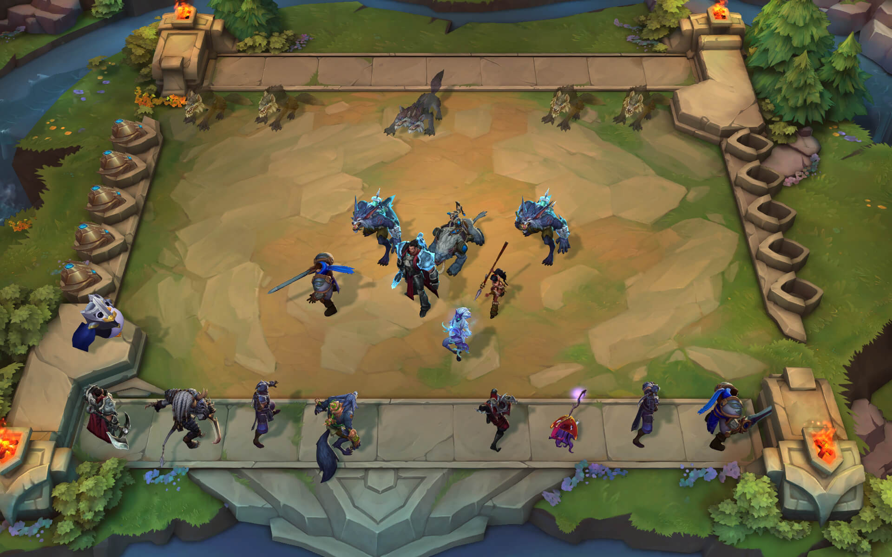

Potyczki Taktyczne - tryb rozgrywki typu auto battler dla ośmiu graczy w League of Legends, który wyszedł w patchu V9.13 (27. czerwca 2019 na serwerach europejskich).

Tryb ten rozgrywa się na mapie zwanej jako Konwergencja. Składa się ona z dziewięciu pól, na których umieszczeni są ośmioro graczy, a każdy z nich posiada swoją planszę na obrzeżach. Dziewiąte pole znajdujące się na środku mapy jest miejscem tzw. Karuzeli (kręcący się w kółko 10 postaci z rożnymi przedmiotami).
To specjalne awatary reprezentujące graczy w czasie rozgrywki. Każdy z nich posiada 100 punktów zdrowia i jej poziom spada w momencie przegrania rundy bądź zremisowania.
Przed każdą rundą rekrutujesz nowych bohaterów do swojej drużyny, wydając w sklepie złoto. W trakcie rozgrywki twoja drużyna staje się coraz mocniejsza w miarę wybierania bohaterów, którzy mają podobne pochodzenie i klasy, ponieważ dzięki temu odblokowujesz premie za cechy. Dodatkowo możesz połączyć trzy egzemplarze tego samego bohatera, aby stworzyć ulepszoną wersję. Z połączenia trzech ulepszonych egzemplarzy powstanie superwersja bohatera.
Następnie twoja drużyna powędruje na planszę przeciwnika (lub to drużyna przeciwnika przyjdzie do ciebie) i rozpocznie się walka. Podczas walki twoi bohaterowie będą automatycznie zmieniać pozycje, atakować i rzucać zaklęcia. Podobnie jak w League musisz z rozwagą dobrać skład drużyny i pozycje bohaterów, aby w pełni wykorzystać ich potencjał.
Pod koniec każdej rundy otrzymujesz złoto, które możesz wydać podczas kolejnych rund. Co jakiś czas wszyscy zbierają się w ramach specjalnego wydarzenia i wybierają bohaterów z jednego zestawu, zawierającego bohaterów o zróżnicowanej sile. Kolejność wybierania jest odwrotna do uzyskanych wyników, tak aby wyrównać szanse w grze tych, którym do tej pory szło trochę gorzej. Należy wygrywać walki drużynowe, bo dzięki temu unikasz utraty zdrowia, i zadajesz straty przeciwnikom. A gdy przetrzymasz wszystkich pozostałych, zwyciężasz — i nie zapomnij o zasypaniu wszystkich emotkami.